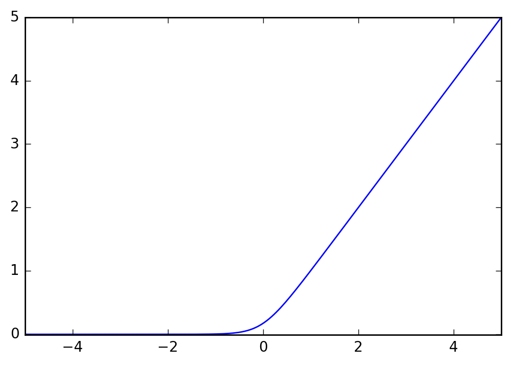
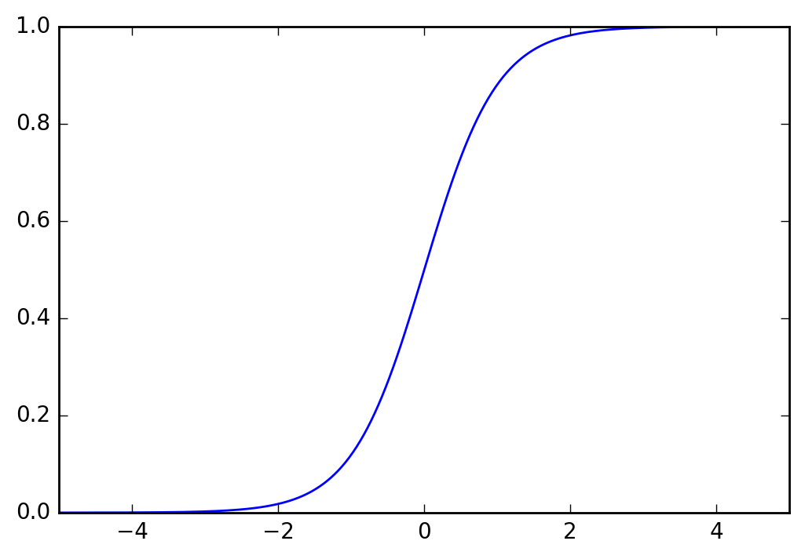

最近读paper1的时候，看到了一个有趣的函数，可以看成thresholding function的一个光滑的近似，故我决定写篇文章简单介绍一下。
原函数
文中给出的这个函数是这样的：
\[f(x)=0.25\ln(\cosh(2x))+0.5x+0.17.\]
图像是这样的：

很神奇是不是！但我们还是要研究下这个函数为什么就work？
首先函数中的那个0.17是怎么来的？从图像上观察，应该是进行平移保证整个函数是非负的。
令\(g(x)=\ln \cosh (x) + x\)，这样\(f(x)=\frac{1}{4}g(2x) + 0.17\)。那我们先来看下\(g(x)\)趋于负无穷时的极限：
\[
\begin{align*}
& \lim_{x\to -\infty}\ln \cosh(x) + x \\
=& \lim_{x\to -\infty} \ln \frac{e^{-x} + e^x}{2} + x \\
=& \lim_{x\to -\infty} \ln \exp (\ln(e^{-x} + e^x) + x) - \ln 2\\
=& \lim_{x\to -\infty} \ln(1+e^{2x}) - \ln 2\\
=& -\ln 2
\end{align*}
\]
这样\(\frac{1}{4}g(2x) = -\frac{1}{4}\ln 2\approx -0.17\)，所以这个函数最精确的表达应该是
\[f(x)=0.25\ln(\cosh(2x))+0.5x+0.25\ln2.\]
导函数
接下来我们换个角度，一般的thresholding function是
\[h(x)=\left\{
\begin{aligned}
0 & \qquad \mathrm{if}~ x < 0\\
x & \qquad \mathrm{if}~ x \ge 0,
\end{aligned}
\right.
\]
其导数是
\[h'(x)=\left\{
\begin{aligned}
0 & \qquad \mathrm{if}~ x < 0\\
1 & \qquad \mathrm{if}~ x > 0.
\end{aligned}
\right.
\]
而这个光滑版的thresholding function的导数是
\[f'(x)=0.5\tanh(2x)+0.5,\]

可以看作是\(h'(x)\)的光滑近似，图像上看就是sigmoid形的。它保证了\(x<0\)时，随着\(x\)减小，\(f'(x)\)能很快的下降到接近于0，反映到原函数上就是此时函数几乎无增长；在\(x>0\)时，随着\(x\)增大，\(f'(x)\)能很快的增长到1，这样原函数就有着线性的增长率。
设计更多的smooth thresholding functions
上一节最后给我们提供了一个角度，我们先选择一个长得像sigmoid的函数，然后求积分，就可以得到一个smooth thresholding function。
例如可以取sigmoid函数\(f'(x)=\frac{1}{1+e^x}\)，这样得到\(f(x)=\ln(1+e^x)\).
-
M.U. Gutmann and A. Hyvärinen. Noise-contrastive estimation of unnormalized statistical models, with applications to natural image statistics. Journal of Machine Learning Research, 13:307–361, 2012. ↩